地政学
ワルシャワはEUとNATOの東側に近い首都として、ウクライナ支援、ロシアへの警戒、独立記念日の行進を日常に抱えます。官庁、大使館、記念碑が近く、外交と安全保障の空気がトラムの窓にも映ります。緊張を伝える街です。

🇵🇱 ポーランド / ヨーロッパ / World City Atlas
戦争で破壊され、社会主義期に拡張され、EU時代に再び成長した首都です。国家の記憶、サービス経済、住宅地、川辺の公共空間が重なります。
都市の骨格
ワルシャワはヴィスワ川の段丘上に、旧市街、官庁街、社会主義期の大通り、新しい高層業務地区を重ねます。国境と戦争の記憶を抱えつつ、EU時代の企業活動と教育が都市を押し広げています。
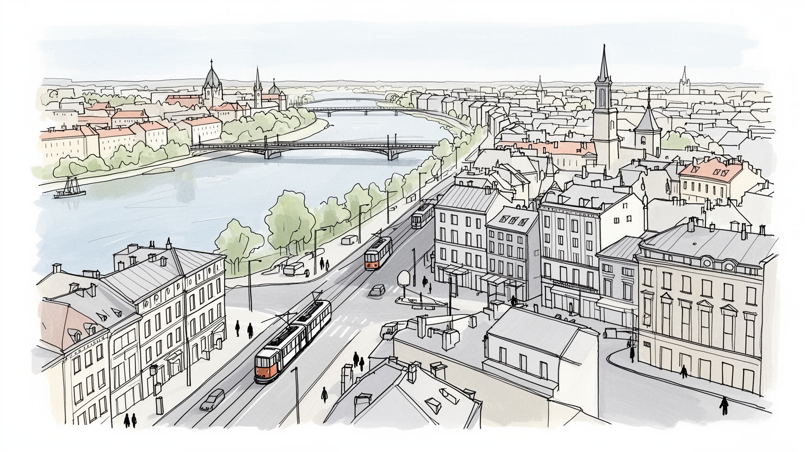
ワルシャワはEUとNATOの東側に近い首都として、ウクライナ支援、ロシアへの警戒、独立記念日の行進を日常に抱えます。官庁、大使館、記念碑が近く、外交と安全保障の空気がトラムの窓にも映ります。緊張を伝える街です。
行政、金融、IT、研究、出版、メディアが雇用を広げ、大学から若い専門職を集めます。一方で市場、飲食、配送、清掃、介護は移民労働にも支えられ、家賃と賃金差が生活を分けます。路上経済も見えます。市場にも出ます。
カトリックの祝祭、ショパンの音楽、ジャズ、劇場、映画、大学文化が公共性を作ります。旧市街とユダヤ人の記憶、ゲットー蜂起、戦後再建も不可欠で、信仰と追悼は観光ではなく市民の倫理を問います。音も残ります。
日常はトラム、地下鉄、団地、川辺の散歩、レギアの試合、ミルクバーや市場にあります。観光客は旧市街や博物館を巡りますが、子どもの遊び場、高齢者の買い物、冬の光にも都市の読み方が広がります。生活も見えます。
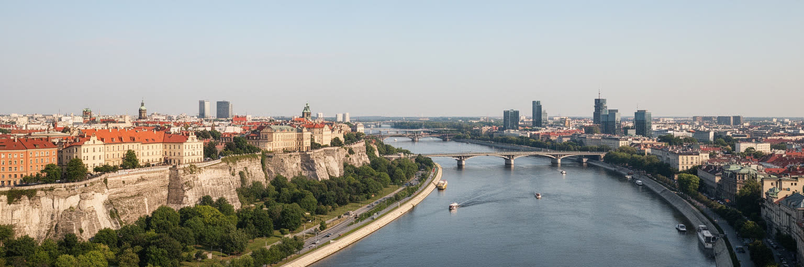
ワルシャワはヴィスワ川の西岸段丘を中心に発展し、旧市街、王宮、大学、官庁街、業務地区が高い河岸に並びます。川は都市の中央にありながら、長く生活の背後に置かれてきました。橋の数、鉄道駅の配置、左岸の歴史地区と右岸プラガの距離は、街の使い方を大きく分けます。プラガ側には古い工場、労働者街、市場、教会が残り、再開発と文化施設の進出が進む一方、中心部とは違う粗さと生活感があります。近年のヴィスワ川沿いは、散歩、ランニング、自転車、カヤック、夏の屋外席、冬の静かな雪景色を受け止める公共空間になりました。砂地の河岸では若者が夜風に集まり、家族は日曜日に歩き、高齢者は日差しのあるベンチを選びます。レギアの試合後に川辺へ流れる人びとや、週末にボールを蹴る子どもも、この地形を日常の遊び場に変えています。街を読むには、旧市街の広場だけでなく、川を越える通勤、右岸の住宅地、空港と中央駅を結ぶ軸まで見る必要があります。川は観光の背景ではなく、都市の歴史的な分断と再接続を示す地形です。洪水への備え、橋の混雑、自転車道の整備、河岸の緑地化は、成長する首都が自然とどう付き合うかを示します。川音も聞こえます。ヴィスワを挟む左右岸を往復すると、再建、工業、住宅、スポーツ、余暇の複数の層から都市ができていることがよく見えます。
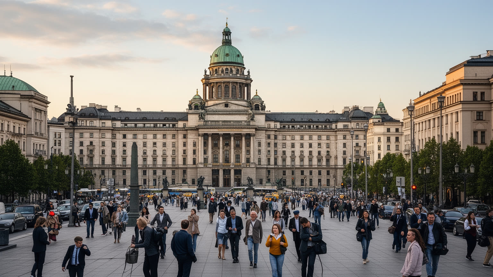
ワルシャワはポーランド国家の政治的な舞台です。大統領府、国会、首相府、省庁、最高裁、外国大使館が中心部に集まり、国家行事、抗議デモ、追悼式、外交会談が街路の時間を変えます。ポーランドはEUとNATOの一員であり、同時にロシア、ベラルーシ、ウクライナに近い歴史的な緊張を抱えます。そのため首都の政治は、国内行政だけでなく、エネルギー安全保障、難民支援、軍事同盟、東方政策と結びつきます。十一月の独立記念日には行進、式典、国旗、警備が都心を満たし、祝祭と政治的な主張が同じ空間に現れます。広場や記念碑は、独立、蜂起、占領、社会主義体制からの転換を語る場所であり、政治的な記憶が通勤や買い物の動線に置かれています。テレビ局や新聞社の報道、書店に並ぶ政治本、カフェでの議論も、首都の緊張を身近な言葉に変えます。保守とリベラル、地方と首都、カトリック的価値観と世俗的な都市生活の対立も、選挙やデモを通じて見えます。ワルシャワを読むことは、中央ヨーロッパの国家がどのように安全を考え、どの歴史を公共空間で強調し、誰を市民として包み込むのかを見ることです。官庁街の背後には、戦争の記憶、国境の不安、EU資金による近代化、公共放送や司法制度をめぐる論争が重なります。首都の威厳は建物だけでなく、政策の結果を受け止める住民の生活にも表れます。
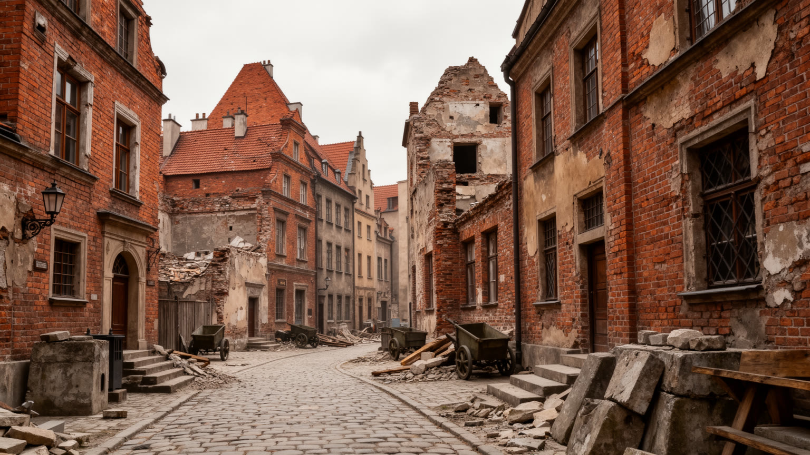
ワルシャワの旧市街は古く見えますが、その多くは第二次世界大戦後に瓦礫から再建された都市空間です。ナチス・ドイツによる破壊、ワルシャワ蜂起の敗北、住民の追放は、街の物理的な連続性を断ち切りました。戦後の再建は、失われた建物を写す作業であると同時に、国家が記憶をどう形にするかという政治的な事業でもありました。絵画、測量、写真、市民の証言をもとに戻された広場やファサードは、単なる模造ではなく、都市が自らの存在を主張する証拠です。一方で、再建された美しさは破壊の暴力を見えにくくすることもあります。観光客が写真を撮る市場広場では、馬車の音、土産物店の匂い、カフェの皿の音が軽やかに響きますが、石畳の下には失われた家族史と通りがあります。冬の夕方には壁の色が雪明かりで淡くなり、楽しげな買い物のすぐ横で追悼の静けさも感じられます。社会主義期には広い大通り、集合住宅、文化科学宮殿が都市の新しい骨格を作り、戦前とは別の首都像を示しました。現在のワルシャワは、再建された旧市街、社会主義のモニュメント、ガラスの高層ビルを同じ地図に置く都市です。過去を保存するだけでなく、破壊された過去を再構成し、その上で新しい生活を組み立ててきた点に特別な重さがあります。復元された壁の前では、美しさ、商業、喪失、日常を同時に見る態度が求められます。
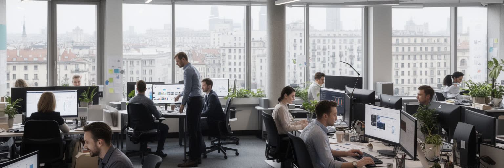
ワルシャワの経済は、政治首都であることに加え、金融、保険、法律、会計、IT、外資系業務サービス、メディア、出版、大学研究で強くなりました。EU加盟後の投資、英語を使う若い人材、国内市場へのアクセスは、多国籍企業の地域拠点を引き寄せています。中央駅周辺やヴォラ地区には高層オフィスが立ち、社会主義期の工業地はビジネス街や住宅へ変わりました。テレビ局、新聞社、出版社、広告会社は政治都市の情報量を増やし、大学や研究機関は工学、医学、社会科学の人材を送り出します。スタートアップ、ゲーム開発、研究室、共有オフィスは若い都市の顔を作り、学び直しの講座にも人が集まります。成長は雇用を増やしますが、仕事の質は一様ではありません。専門職、プログラマー、金融人材が高い賃金を得る一方、清掃、警備、飲食、配送、介護、建設、市場の小商いは不安定な契約や移民労働にも支えられます。ウクライナ、ベラルーシ、アジア諸国からの人びとも労働市場の一部になり、言語、資格、在留資格が働ける場所を左右します。物流では鉄道、道路、空港が国内外を結び、首都圏の倉庫や配送網が都市生活を支えます。産業を読むには、オフィスの光だけでなく、夜の清掃、朝の配送、大学から職場へ向かう若者、家賃上昇に追われる労働者を見る必要があります。経済の成功は、都市で働く人が住み続けられるかによって試されます。
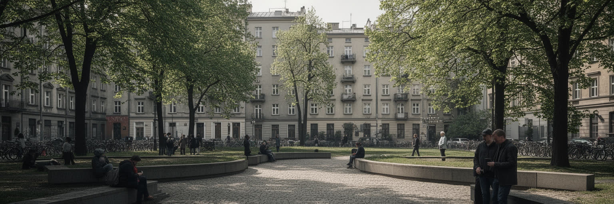
戦前のワルシャワは、世界有数のユダヤ人都市でもありました。商店、学校、劇場、新聞、宗教施設、政治運動があり、ポーランド語、イディッシュ語、ヘブライ語が生活の中で交差していました。ナチス占領下のゲットー、飢餓、強制移送、蜂起、絶滅は、その巨大な都市文化を破壊しました。現在の街では、ポーランド・ユダヤ人歴史博物館、ゲットー蜂起記念碑、壁の痕跡、墓地、舗道の印が、見えなくなった隣人の存在を示します。重要なのは、ユダヤ人の記憶を悲劇だけに閉じ込めないことです。かつてのワルシャワには宗教生活だけでなく、労働運動、文学、演劇、印刷、日常の市場、パン屋、古書、新聞売りの声がありました。音楽や料理、冗談、学校帰りの子どもたちの足音まで想像すると、失われた社会は数字より厚く感じられます。追悼は犠牲者を数えるだけでなく、失われた社会の厚みを思い出す作業です。同時に、戦後の沈黙、反ユダヤ主義、所有権、記念の政治も避けて通れません。旧市街の華やかさや新しい住宅の下に見えない地図を重ねると、奪われた家、残された墓石、記憶を継ぐ教育の意味が立ち上がります。学校の遠足、博物館の展示、追悼式で灯る小さな光は、現在の住民が排除や暴力をどう語るかを選ぶ場です。失われた都市文化を想像する力が、今の多様性への感度を作ります。
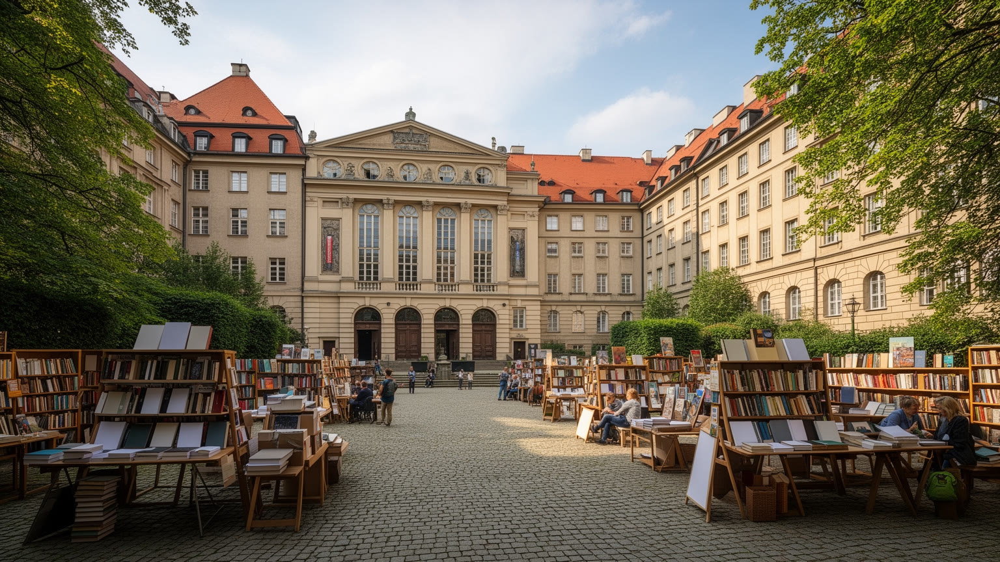
ワルシャワの文化は、ショパンの記憶、国立劇場、映画、現代美術、大学、出版社、独立系書店、音楽祭によって厚みを持ちます。夏のワジェンキ公園ではピアノ曲が木陰に広がり、夜にはジャズクラブや電子音楽のクラブが別の都市の鼓動を作ります。首都大学や研究機関は若者を集め、政治、法律、医学、工学、人文科学の人材を全国から引き寄せます。学生の議論、小劇場、図書館、地域センター、壁に貼られたポスターは、国家的な記念行事とは違う公共性を育てます。ポーランド語の文学と歴史教育は、占領、抵抗、移民、亡命の記憶を強く意識しますが、若い世代は英語圏やEUの文化とも自然につながります。学校祭、映画祭、野外コンサート、子ども向けの科学イベントも、学びと遊びを近づけています。カトリックの祝日や教会は社会のリズムを作る一方、都市部では世俗的な価値観、女性の権利、LGBTQの権利、報道の自由をめぐる議論も可視化されます。新聞、テレビ、オンライン媒体、出版社が集中するため、政治と文化の言葉は早く広がり、反論もすぐに現れます。教育と文化を見れば、首都が記憶を守るだけでなく、国の将来像をめぐる議論を集める場であることがわかります。大劇場だけでなく、学校の音楽教室や住宅地の図書館も、都市文化を住民自身のものにしています。身近です。
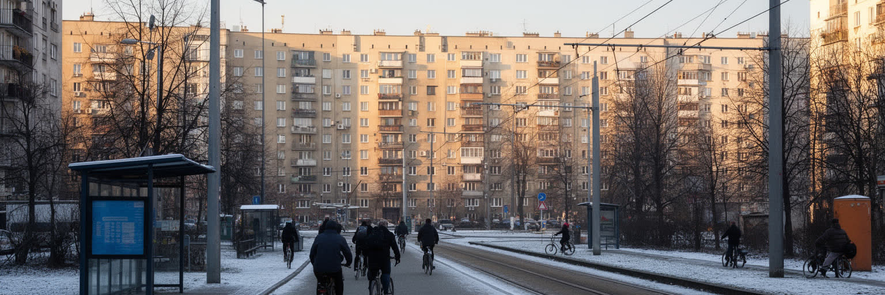
ワルシャワの日常を理解するには、旧市街や高層ビルだけでなく、広い住宅団地、郊外の新築マンション、トラムの停留所、地下鉄の混雑を見る必要があります。社会主義期の集合住宅は、緑地、学校、商店を組み込んだ生活単位として広がり、現在も多くの住民の基盤です。朝の停留所では子どもを学校へ送る親、大学へ向かう学生、診療所へ行く高齢者、配送員が同じ車内に乗ります。市場で野菜を買う人、薬局の前で待つ人、ベビーカーを押して地下鉄へ降りる人も、住宅地の時間を作ります。近年は所得上昇と人口流入で住宅価格が上がり、若い世帯や単身者は中心部から遠い地区へ移ることも増えました。郊外化は広い住まいを得る選択肢になりますが、車依存、通勤時間、保育園や医療へのアクセスを重くします。地下鉄は南北と東西の移動を改善し、トラムとバスは細かい生活圏を支えますが、成長速度に交通インフラが追いつかない場所もあります。賃貸市場では学生、移民、若い専門職が競合し、ウクライナからの避難者の受け入れも住宅需要を変えました。住まいは経済成長の影を最も直接に示します。団地の中庭、古い商店、保育施設、診療所、冬に点る窓の明かりは、派手ではなくても生活の連続性を守ります。再開発で建物が新しくなる時、その小さな支えが失われないかを確認することが欠かせません。
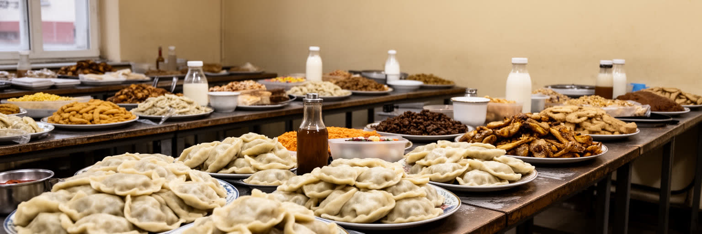
ワルシャワの食の風景は、ピエロギ、ジュレック、肉料理、パン、乳製品、菓子といったポーランドの家庭的な味から、ベトナム料理、ウクライナ料理、ジョージア料理、中東料理、ヴィーガン食、専門コーヒーまで広がります。社会主義期の名残を持つバル・ムレチュニ、いわゆるミルクバーは、安価で温かい食事を出す場所として、学生、高齢者、労働者、観光客が交差します。市場や小さな食料品店は、季節の野菜、きのこ、発酵食品、蜂蜜、花を通じて地域の生活を支えます。売り手の声、紙袋の手触り、焼きたてのパンの匂いは、統計では見えない都市の感覚です。一方で中心部の再開発地区では、国際的なレストラン、フードホール、カフェが増え、若い専門職の消費文化を形作ります。夜には小皿料理の店やクラフトビールのバーが開き、会話の速度も昼と変わります。食は豊かさの印であると同時に、物価上昇を感じる場所でもあります。昼食の値段、スーパーの棚、暖房費と食費の配分は、生活を直接に語ります。宗教的な祝日や家族行事では、食卓が記憶を伝える役割を持ちます。食を読むには、名物料理だけでなく、誰が厨房で働き、誰が安い食堂を必要とし、どの移民コミュニティが新しい味を根づかせているかを見る必要があります。朝のパン屋、昼の社員食堂、夕方の市場、夜の小さなバーをたどると、観光名所では見えない時間割が現れます。
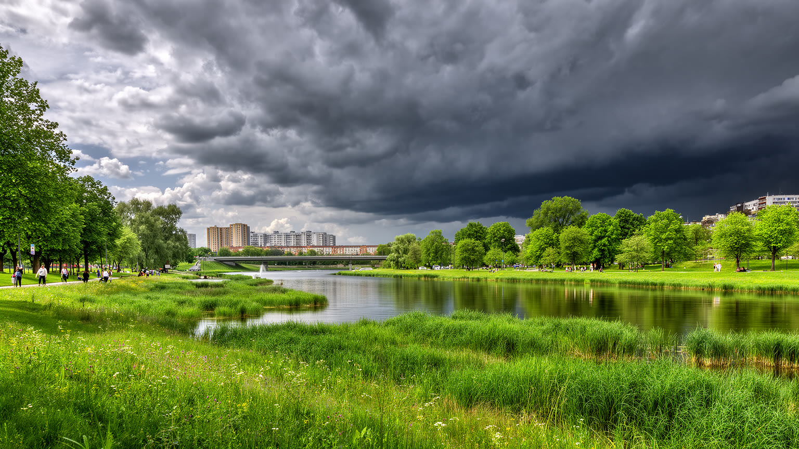
ワルシャワは大陸性の影響を受け、冬は冷え込み、雪や凍結が通勤と暖房費を左右します。夕方の早い暗さ、街灯に浮かぶ白い息、旧市街の屋根に残る雪、トラムの窓を流れる黄色い光は、冬の首都を強く印象づけます。夏は温暖で過ごしやすい日も多い一方、熱波が増えると、古い集合住宅、アスファルトの広い道路、高層ビル周辺の熱が問題になります。ワジェンキ公園、サスキ庭園、モコトフの緑地、ヴィスワ川沿いの自然河岸は、景観だけでなく、暑さを和らげ、住民が歩き、休み、集まる社会インフラです。団地の緑は子どもの遊び場、高齢者の散歩道、犬の散歩、近所の会話を支えます。サッカーの練習場、川辺のランニングコース、屋外ジムも、健康と余暇の身近な場所です。週末には家族が公園でそり遊びやピクニックをし、季節の変化を身体で確かめます。朝の霜や夏の草の匂いも、季節を伝えます。光も変わります。しかし再開発や道路整備で緑が削られると、生活の質はすぐに下がります。気候対策は、川辺の公園だけでなく、断熱改修、公共交通、雨水管理、街路樹、涼める公共施設と結びつく必要があります。冬の寒さと夏の暑さを同時に考える都市では、エネルギー価格も社会問題になります。誰が涼しい部屋に住み、誰が暖房費に悩み、どの地区に木陰が残るのかを見ることが、環境を読む出発点です。
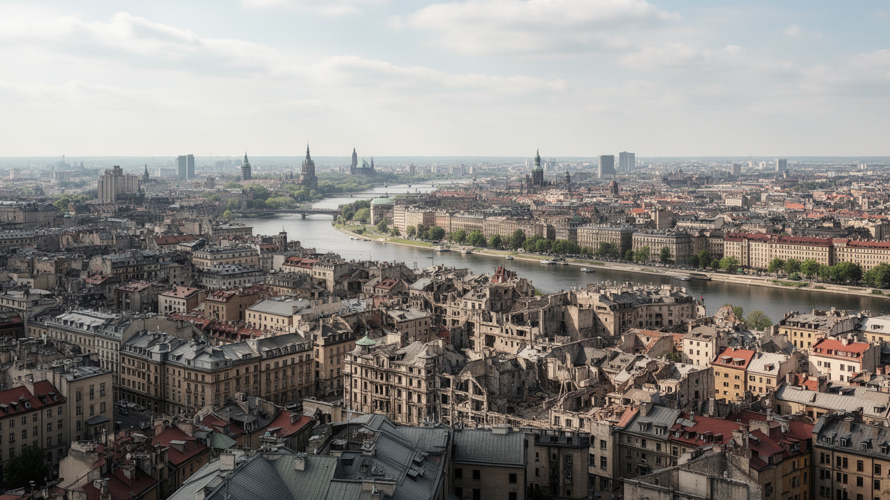
ワルシャワは、破壊と再建、国家機能、ユダヤ人の不在、社会主義期の都市計画、EU時代のサービス経済が同じ街路に重なる都市です。旧市街の広場は歴史の連続を演出しますが、その連続は戦後に作り直されました。高層オフィスは経済成長を示しますが、その足元では家賃、移民労働、交通混雑、公共サービスの負担が増えます。教会と記念碑は国家の物語を支えますが、大学、劇場、デモ、独立系メディア、ジャズクラブ、サッカースタジアムは別の未来像も語ります。レギアの試合の日には緑白赤の色が街に現れ、ショパンの旋律が公園に流れ、夜のクラブは若い世代の自由な時間を作ります。その音、匂い、冷たい空気、買い物袋の重さまで含めて都市の手触りです。ヴィスワ川の左右岸を移動すると、観光都市、政治首都、住宅都市、工業の記憶を持つ街が一つに重なって見えます。読む鍵は、壮麗な復元や新しい高層ビルを単独で評価しないことです。どの記憶が公共空間に残され、どの生活が成長の外側に置かれ、どの住民が都市の近くに住めるのかを見なければなりません。働く人、学ぶ人、避難してきた人、観光客、子ども、高齢者が日々使い直す都市です。市場で買い物をする人、川辺を走る人、追悼式に集まる市民を同じ地図に置くと、ワルシャワの価値は完成した景観ではなく、矛盾を抱えながら更新される生活にあるとわかります。